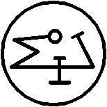

Altıncı İsim NARILUGGALDIMMERANKIA’dır
IGIGI ve ANNUNAKI’nin Gözcüsü, Rüzgar Demonlarının Yardımcı Kumandanıdır. Sana dadanan herhangi bir maskimi kaçıracaktır ve rabisunun hasmıdır. Onun bilgisi olmadan hiç kimse Aşağıdaki ya da Yukarıdaki Dünyaya geçemez. Kelimesi BANRABISHU’dur. Onun mührü budur:
